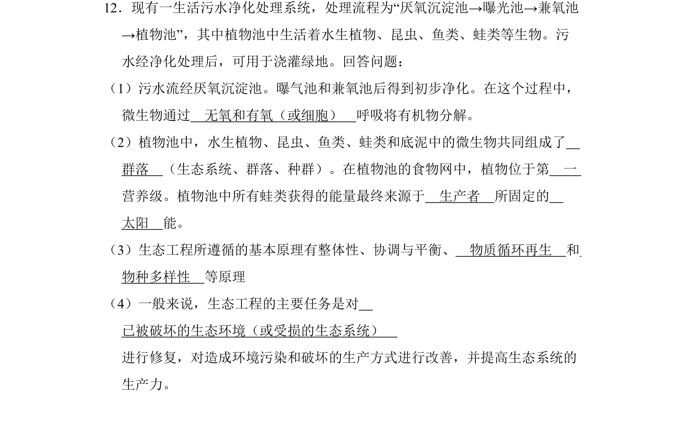
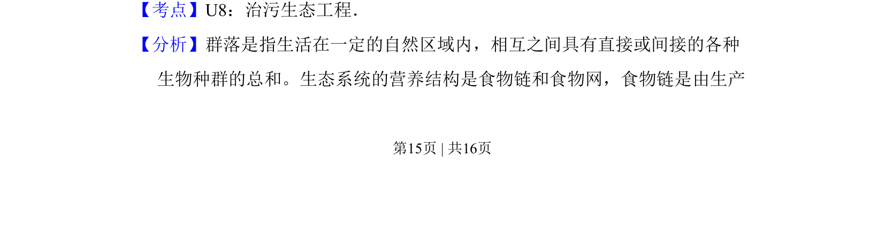
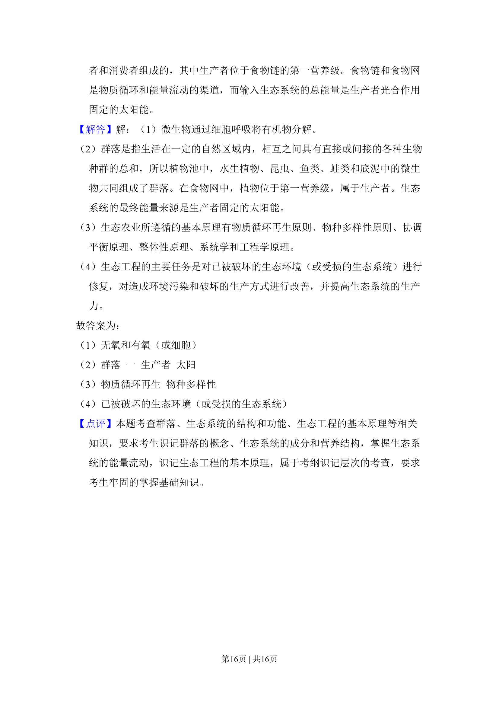

考点：治污生态工程 群落 营养级 生态工程原理
治污生态工程
群落
营养级
生态工程原理

该题考查生态工程中污水处理流程、群落及营养级、生态工程原理等知识。


📄 原 PDF 第 15 页：素材/真题/吉林/2008-2024·（吉林）生物高考真题/2011年高考生物试卷（新课标）（解析卷）.pdf
素材/真题/吉林/2008-2024·（吉林）生物高考真题/2011年高考生物试卷（新课标）（解析卷）.pdf